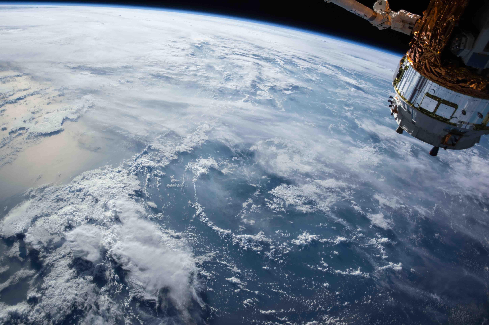
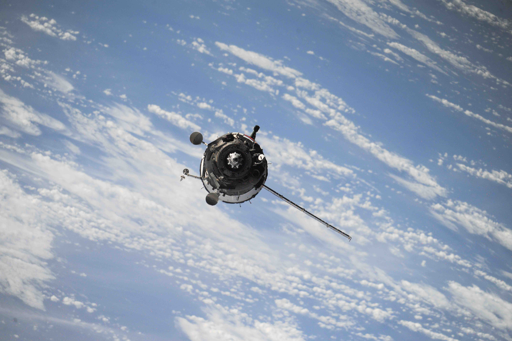
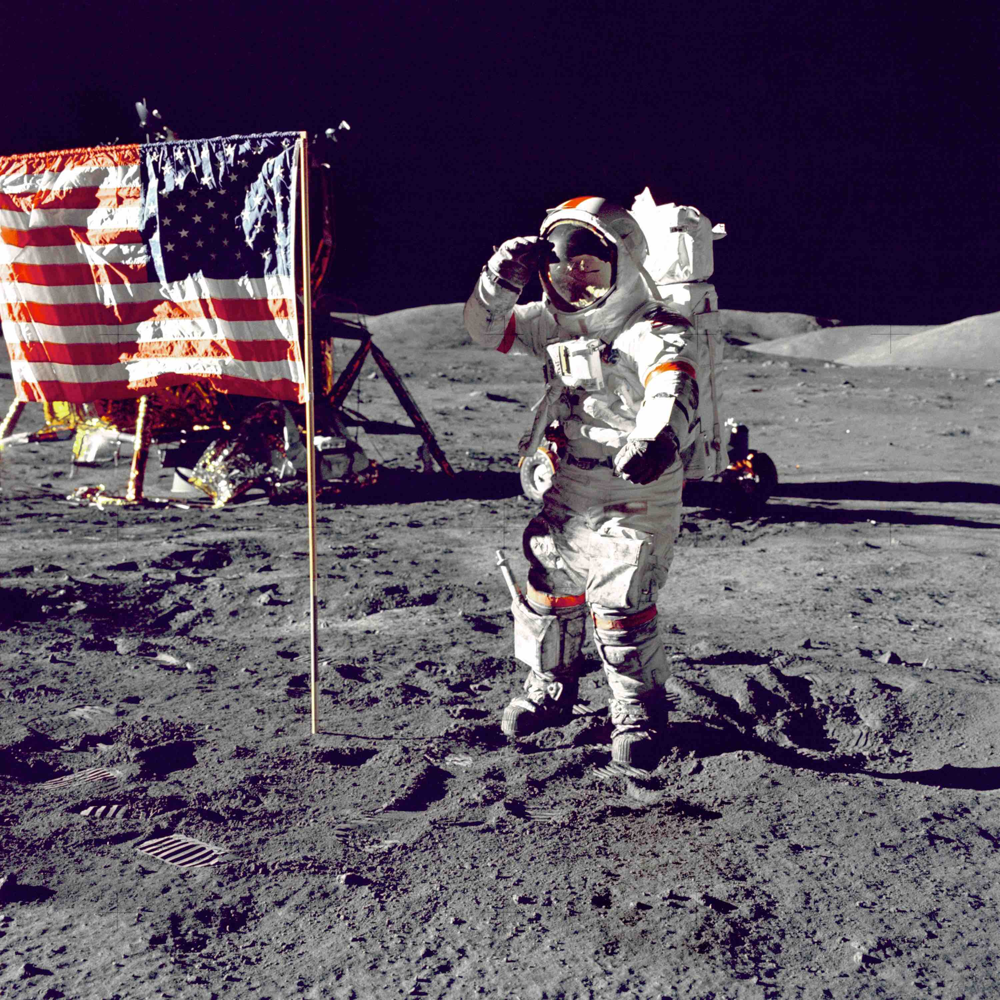

DANIELLE WOOD, DIRECTOR, SPACE ENABLED RESEARCH GROUP MIT MEDIA LAB
One of the biggest reasons we go to space is to learn about Earth. For the past four decades, government agencies in the United States, Europe, Japan, India, China, Brazil, Argentina, Canada, South Korea, and other regions have operated nationally owned Earth science satellites that monitor changes in our environment. With their unique sensors, these satellites can measure features like soil moisture, chemical components in the atmosphere, wind speed, humidity, ocean temperature, vegetation growth, and other variables. Government-funded research agencies use this data to design online maps and other applications that can answer important questions for policymakers and citizens alike. In a project called SEVIR, nasa and the us Agency for International Development work with regional centers that serve countries in Latin America, West Africa, East Africa, the Himalayan Region, and Southeast Asia. SEVIR teams in each region use nasa satellite data to build web applications that can inform farmers how to manage crops under cold temperatures, warn forest managers of distant fires, help experts estimate flood risks, and advise first-responders after natural disasters.

A new era of satellite-Earth observation may also be unfolding. Several commercial companies have built businesses around collecting imagery of Earth and selling images or analysis services. For example, the company Planet operates a fleet of about 200 satellites the size of a shoebox that each carry a camera. With this large group of satellites, Planet can take images everywhere on Earth each day. This type of data is used for a variety of applications, and new ideas are being explored every day—from monitoring farms and understanding traffic patterns to planning construction and tracking ships.
In the coming decades, data is going to be generated by sensors in space, in the air, and throughout natural and human-mad environments as the internet of things takes shape. The amount of data is already overwhelming, and it is only going to grow. Researchers and companies are inventing smarter computer algorithms to answer questions hidden in large data sets.
Humanity’s understanding of its place in the universe will shift forever when we find evidence of current or past life beyond Earth. It is possible that strong evidence for life on another planet or moon will be found within our lifetime. Scientists from all over the world are studying the surfaces of thousands of planets, dwarf planets, moons, asteroids, comets, and other small rocks orbiting the sun. A surprisingly large amount of liquid has already been found in the solar system, from the water at the poles of Earth’s Moon and Mars to the ocean worlds, such as Jupiter’s moon Europa and Saturn’s moon Enceladus. In the coming years, scientists who are searching for life hope to send robotic explorers to visit these oceans of water and methane throughout our solar system.
Meanwhile, beyond our small solar system, scientists are learning new ways to identify planets that orbit other stars. A few decades ago, we thought that the planets surrounding our sun were unique. Now scientists have found thousands of planets orbiting other stars. We are learning how to measure what kinds of materials and atmospheres make up these “exoplanets.” With new science and engineering techniques scientists are asking whether any of these distant planets could feel like home to Earthlings.
The way we build satellites is changing rapidly. During the 1970s and 1980s, the space community developed a method to build reliable satellites. This method includes careful testing of satellites before launch by placing them in conditions that simulate the temperatures of space, its vacuum-like environment, and the violent shaking of a launch vehicle. These traditional satellites are large, roughly the size of a sports utility vehicle, extensively tested, and designed to carry as many scientific sensors or radios as possible, all of which makes them expensive to build and maintain.
Another approach to building satellites has been emerging over the past three decades, and it’s turning the industry upside down. Engineers are building smaller satellites with fewer sensors or radios that last for only a short time in space, say for one year instead of 10 years. These small satellites are designed with standard commercial electronic parts that make them cheaper to both build and test. Engineers expect to get less performance out of an individual satellite and more performance out of a group of satellites working together. Companies are already proposing new business models around small satellites, such as having a large number of small satellites flying close to the Earth and providing communication services that give internet access and phone connections to people anywhere on the globe.
In the next revolution, we need to learn how to use additive manufacturing or assembly of modular components to provide satellites with designs that can be updated after launching into space. New areas of research are necessary to reduce the time satellites spend on orbit after they finish their mission. Each object in space increases the risk that satellites may collide and damage each other.


A generation of children was inspired when they watched the first humans explore the Moon during the Apollo missions. A few of these children include entrepreneurs Jeff Bezos, Elon Musk, Richard Branson, and the late Paul Allen, all of whom made money in non-space fields and built visionary space companies. Today, the exploits of companies like Musk’s SpaceX and Bezos’ Blue Origin attract a new generation of space enthusiasts via social media. For example, SpaceX is well known for videos of their rockets launching and returning vertically on land or on floating sea platforms. These founders also advocate visions for how humans can expand our activities in space. SpaceX and Musk are preparing to create neighborhoods on Mars with all the functions of an Earth-based society, while Bezos and Blue Origin are working toward a future with “millions of people living and working in space.
In the future, entrepreneurs may send robots to asteroids to extract water or metals. Companies may build manufacturing systems in orbit around the Earth or the Moon that can create products for markets on Earth or in space. If many people, or robots, are working in space, we may need fuel depots, communication, waste management, agricultural production, social venues, and cultural institutions, either in orbit or on planetary surfaces such as the Moon. As this new space activity is considered, more international coordination is needed to ask what guides our economic activities in space. There are already five United Nations Treaties that have been signed by many countries. Now is the time for society to examine how we can expand human presence in space while increasing economic equality, reducing social hierarchy, celebrating cultural diversity, and avoiding neo-colonial behavior in which powerful actors control territory or resources at the expense of the less powerful.
How will this new scientific and commercial activity in space impact people who live all over the world, especially those who have not been traditionally involved with shaping what happens in space? Countries around the globe are establishing national space programs, training space engineers, and operating satellites for Earth observation or communication. Recently, countries such as Ghana, Kenya, the Philippines, Bhutan, Costa Rica, Chile, and Mongolia completed their first satellite projects, while countries such as Mexico, South Africa, Singapore, Brazil, Argentina, Nigeria, Malaysia, Turkey, Vietnam, Indonesia, and others have a long record of satellite projects. These countries use satellites primarily for Earth observation applications and communication services. While many of the entrepreneurial companies in space have been based in the United States, there are plenty of examples of new space companies in Europe, Asia, Latin America, and Africa.
As new adventures open up in space, innovative ideas are needed from every part of the globe to bring the benefits of space to everyone on Earth.